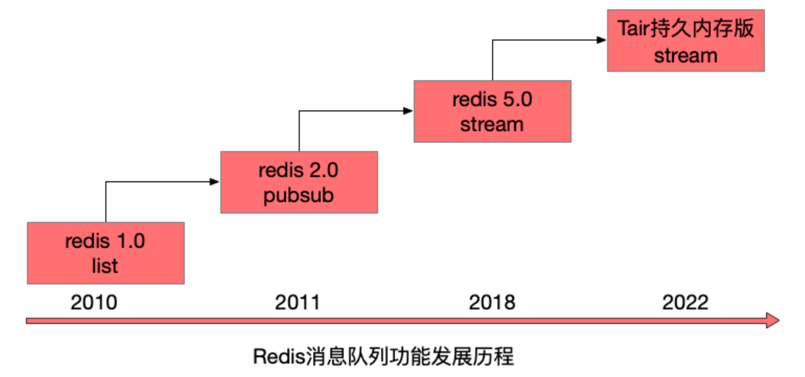
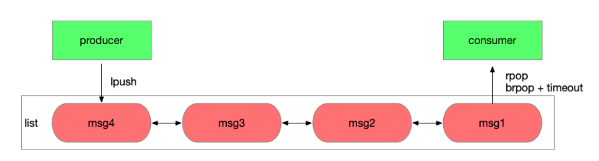
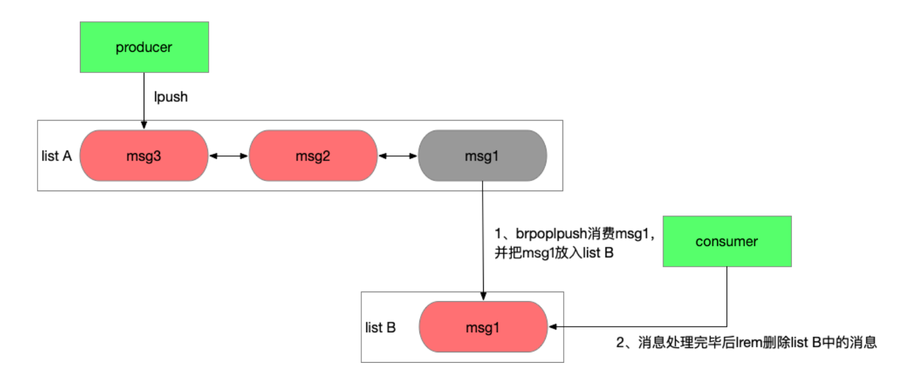
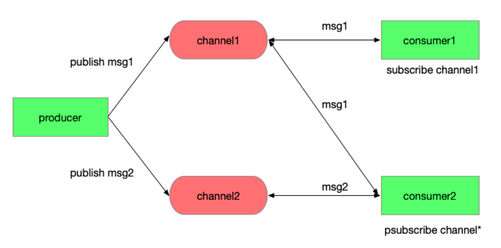
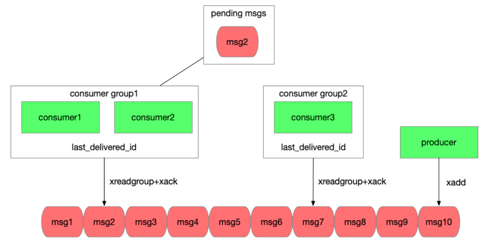
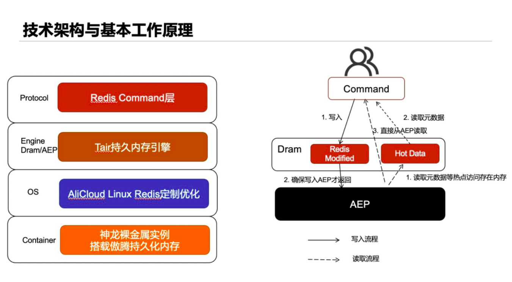
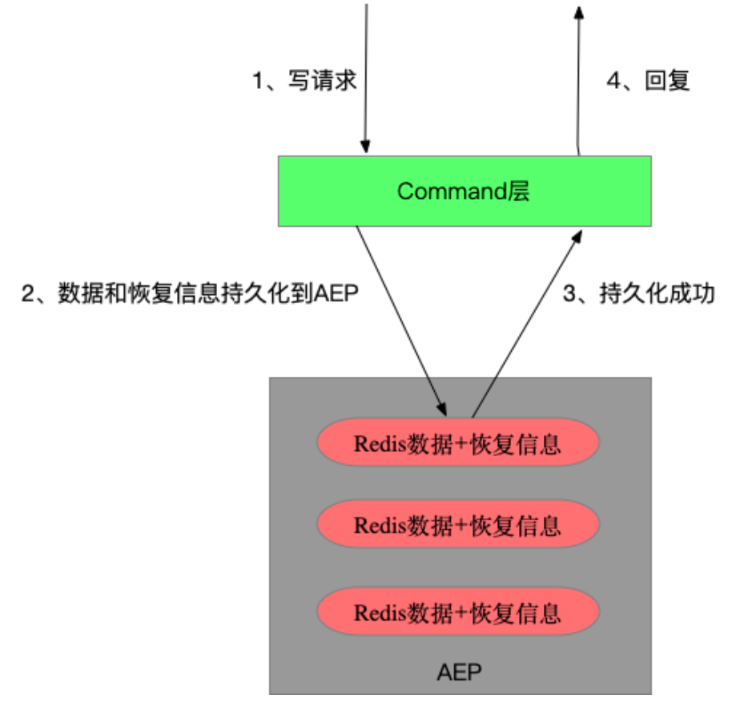
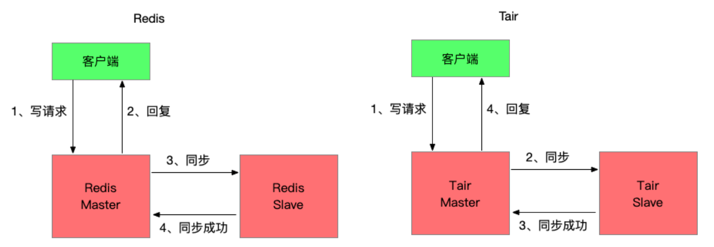

Redis是目前最受欢迎的kv类数据库，当然它的功能越来越多，早已不限定在kv场景，消息队列就是Redis中一个重要的功能。
Redis从2010年发布1.0版本就具备一个消息队列的雏形，随着10多年的迭代，其消息队列的功能也越来越完善，作为一个全内存的消息队列，适合应用与要求高吞吐、低延时的场景。
我们来盘一下Redis消息队列功能的发展历程，历史版本有哪些不足，后续版本是如何来解决这些问题的。

一 Redis 1.0 list
从广义上来讲消息队列就是一个队列的数据结构，生产者从队列一端放入消息，消费者从另一端读取消息，消息保证先入先出的顺序，一个本地的list数据结构就是一个进程维度的消息队列，它可以让模块A写入消息，模块B消费消息，做到模块A/B的解耦与异步化。但想要做到应用级别的解耦和异步还需要一个消息队列的服务。
1 list的特性
Redis 1.0发布时就具备了list数据结构，应用A可以通过lpush写入消息，应用B通过rpop从队列中读取消息，每个消息只会被读取一次，而且是按照lpush写入的顺序读到。同时Redis的接口是并发安全的，可以同时有多个生产者向一个list中生产消息，多个消费者从list中读取消息。
这里还有个问题，消费者要如何知道list中有消息了，需要不断轮询去查询吗。轮询无法保证消息被及时的处理，会增加延时，而且当list为空时，大部分轮询的请求都是无效请求，这种方式大量浪费了系统资源。好在Redis有brpop接口，该接口有一个参数是超时时间，如果list为空，那么Redis服务端不会立刻返回结果，它会等待list中有新数据后在返回或是等待最多一个超时时间后返回空。通过brpop接口实现了长轮询，该效果等同于服务端推送，消费者能立刻感知到新的消息，而且通过设置合理的超时时间，使系统资源的消耗降到很低。
1 | 基于list完成消息的生产和消费 |

使用rpop或brpop这样接口消费消息会先从队列中删除消息，然后再由应用消费，如果应用应用在处理消息前异常宕机了，消息就丢失了。但如果使用lindex这样的只读命令先读取消息处理完毕后在删除，又需要额外的机制来保证一条消息不会被其他消费者重复读到。好在list有rpoplpush或brpoplpush这样的接口，可以原子性的从一个list中移除一个消息并加入另一个list。
应用程序可以通过2个list组和来完成消息的消费和确认功能，使用rpoplpush从list A中消费消息并移入list B，等消息处理完毕后在从list B中删除消息，如果在处理消息过程中应用异常宕机，恢复后应用可以重新从list B中读取未处理的消息并处理。这种方式为消息的消费增加了ack机制。
1 | 基于2个list完成消息消费和确认 |

2 list的不足之处
通过Redis 1.0就引入的list结构我们就能实现一个分布式的消息队列，满足一些简单的业务需求。但list结构作为消息队列服务有一个很致命的问题，它没有广播功能，一个消息只能被消费一次。而在大型系统中，通常一个消息会被下游多个应用同时订阅和消费，例如当用户完成一个订单的支付操作时，需要通知商家发货，要更新物流状态，可能还会提高用户的积分和等级，这些都是不同的下游子系统，他们全部会订阅支付完成的操作，而list一个消息只能被消费一次在这样复杂的大型系统面前就捉襟见肘了。
可能你会说那弄多个list，生产者向每个list中都投递消息，每个消费者处理自己的list不就行了吗。这样第一是性能不会太好，因为同一个消息需要被重复的投递，第二是这样的设计违反了生产者和消费者解耦的原则，这个设计下生产者需要知道下游有哪些消费者，如果业务发生变化，需要额外增加一个消费者，生产者的代码也需要修改。
3 总结
优势
- 模型简单，和使用本地list基本相同，适配容易
- 通过brpop做到消息处理的实时性
- 通过rpoplpush来联动2个list，可以做到消息先消费后确认，避免消费者应用异常情况下消息丢失
不足
- 消息只能被消费一次，缺乏广播机制
二 Redis 2.0 pubsub
list作为消息队列应用场景受到限制很重要的原因在于没有广播，所以Redis 2.0中引入了一个新的数据结构pubsub。pubsub虽然不能算作是list的替代品，但它确实能解决一些list不能解决的问题。
1 pubsub特性
pubsub引入一个概念叫channel，生产者通过publish接口投递消息时会指定channel，消费者通过subscribe接口订阅它关心的channel，调用subscribe后这条连接会进入一个特殊的状态，通常不能在发送其他请求，当有消息投递到这个channel时Redis服务端会立刻通过该连接将消息推送到消费者。这里一个channel可以被多个应用订阅，消息会同时投递到每个订阅者，做到了消息的广播。
另一方面，消费者可以会订阅一批channel，例如一个用户订阅了浙江的新闻的推送，但浙江新闻还会进行细分，例如“浙江杭州xx”、“浙江温州xx”，这里订阅者不需要获取浙江的所有子类在挨个订阅，只需要调用psubscribe“浙江*”就能订阅所有以浙江开头的新闻推送了，这里psubscribe传入一个通配符表达的channel，Redis服务端按照规则推送所有匹配channel的消息给对应的客户端。
1 | 基于pubsub完成channel的匹配和消息的广播 |

在Redfis 2.8时加入了keyspace notifications功能，此时pubsub除了通知用户自定义消息，也可以通知系统内部消息。keyspace notifications引入了2个特殊的channel分别是keyevent@
1 | 通过keyspace notifications功能获取系统事件 |
2 pubsub的不足之处
pubsub既能单播又能广播，还支持channel的简单正则匹配，功能上已经能满足大部分业务的需求，而且这个接口发布的时间很早，在2011年Redis 2.0发布时就已经具备，用户基础很广泛，所以现在很多业务都有用到这个功能。但你要深入了解pubsub的原理后，是肯定不敢把它作为一个一致性要求较高，数据量较大系统的消息服务的。
首先，pubsub的消息数据是瞬时的，它在Redis服务端不做保存，publish发送到Redis的消息会立刻推送到所有当时subscribe连接的客户端，如果当时客户端因为网络问题断连，那么就会错过这条消息，当客户端重连后，它没法重新获取之前那条消息，甚至无法判断是否有消息丢失。
其次，pubsub中消费者获取消息是一个推送模型，这意味着Redis会按消息生产的速度给所有的消费者推送消息，不管消费者处理能力如何，如果消费者应用处理能力不足，消息就会在Redis的client buf中堆积，当堆积数据超过一个阈值后会断开这条连接，这意味着这些消息全部丢失了，在也找不回来了。如果同时有多个消费者的client buf堆积数据但又还没达到断开连接的阈值，那么Redis服务端的内存会膨胀，进程可能因为oom而被杀掉，这导致了整个服务中断。
3 总结
优势
- 消息具备广播能力
- psubscribe能按字符串通配符匹配，给予了业务逻辑的灵活性
- 能订阅特定key或特定命令的系统消息
不足
- Redis异常、客户端断连都会导致消息丢失
- 消息缺乏堆积能力，不能削峰填谷。推送的方式缺乏背压机制，没有考虑消费者处理能力，推送的消息超过消费者处理能力后可能导致消息丢失或服务异常
三 Redis 5.0 stream
消息丢失、消息服务不稳定的问题严重限制了pubsub的应用场景，所以Redis需要重新设计一套机制，来解决这些问题，这就有了后来的stream结构。
1 stream特性
一个稳定的消息服务需要具备几个要点，要保证消息不会丢失，至少被消费一次，要具备削峰填谷的能力，来匹配生产者和消费者吞吐的差异。在2018年Redis 5.0加入了stream结构，这次考虑了list、pubsub在应用场景下的缺陷，对标kafka的模型重新设计全内存消息队列结构，从这时开始Redis消息队列功能算是能和主流消息队列产品pk一把了。
stream的改进分为多个方面
成本：
- 存储message数据使用了listpack结构，这是一个紧凑型的数据结构，不同于list的双向链表每个节点都要额外占用2个指针的存储空间，这使得小msg情况下stream的空间利用率更高。
功能：
- stream引入了消费者组的概念，一个消费者组内可以有多个消费者，同一个组内的消费者共享一个消息位点（last_delivered_id），这使得消费者能够水平的扩容，可以在一个组内加入多个消费者来线性的提升吞吐，对于一个消费者组，每条msg只会被其中一个消费者获取和处理，这是pubsub的广播模型不具备的。
- 不同消费者组之前是相互隔离的，他们各自维护自己的位点，这使得一条msg能被多个不同的消费者组重复消费，做到了消息广播的能力。
- stream中消费者采用拉取的方式，并能设置timeout在没有消息时阻塞，通过这种长轮询机制保证了消息的实时性，而且消费速率是和消费者自身吞吐相匹配。
消息不丢失：
- stream的数据会存储在aof和rdb文件中，这使Redis重启后能够恢复stream的数据。而pubsub的数据是瞬时的，Redis重启意味着消息全部丢失。
- stream中每个消费者组会存储一个last_delivered_id来标识已经读取到的位点，客户端连接断开后重连还是能从该位点继续读取，消息不会丢失。
- stream引入了ack机制保证消息至少被处理一次。考虑一种场景，如果消费者应用已经读取了消息，但还没来得及处理应用就宕机了，对于这种已经读取但没有ack的消息，stream会标示这条消息的状态为pending，等客户端重连后通过xpending命令可以重新读取到pengind状态的消息，继续处理。如果这个应用永久宕机了，那么该消费者组内的其他消费者应用也能读取到这条消息，并通过xclaim命令将它归属到自己下面继续处理。
1 | 基于stream完成消息的生产和消费，并确保异常状态下消息至少被消费一次 |

Redis stream保证了消息至少被处理一次，但如果想做到每条消息仅被处理一次还需要应用逻辑的介入。
消息被重复处理要么是生产者重复投递，要么是消费者重复消费。
- 对于生产者重复投递问题，Redis stream为每个消息都设置了一个唯一递增的id，通过参数可以让Redis自动生成id或者应用自己指定id，应用可以根据业务逻辑为每个msg生成id，当xadd超时后应用并不能确定消息是否投递成功，可以通过xread查询该id的消息是否存在，存在就说明已经投递成功，不存在则重新投递，而且stream限制了id必须递增，这意味了已经存在的消息重复投递会被拒绝。这套机制保证了每个消息可以仅被投递一次。
- 对于消费者重复消费的问题，考虑一个场景，消费者读取消息后业务处理完毕，但还没来得及ack就发生了异常，应用恢复后对于这条没有ack的消息进行了重复消费。这个问题因为ack和消费消息的业务逻辑发生在2个系统，没法做到事务性，需要业务来改造，保证消息处理的幂等性。
2 stream的不足
stream的模型做到了消息的高效分发，而且保证了消息至少被处理一次，通过应用逻辑的改造能做到消息仅被处理一次，它的能力对标kafka，但吞吐高于kafka，在高吞吐场景下成本比kafka低，那它又有哪些不足了。
首先消息队列很重要的一个功能就是削峰填谷，来匹配生产者和消费者吞吐的差异，生产者和消费者吞吐差异越大，持续时间越长，就意味着steam中需要堆积更多的消息，而Redis作为一个全内存的产品，数据堆积的成本比磁盘高。
其次stream通过ack机制保证了消息至少被消费一次，但这有个前提就是存储在Redis中的消息本身不会丢失。Redis数据的持久化依赖aof和rdb文件，aof落盘方式有几种，通过配置appendfsync决定，通常我们不会配置为always来让每条命令执行完后都做一次fsync，线上配置一般为everysec，每秒做一次fsync，而rdb是全量备份时生成，这意味了宕机恢复可能会丢掉最近一秒的数据。另一方面线上生产环境的Redis都是高可用架构，当主节点宕机后通常不会走恢复逻辑，而是直接切换到备节点继续提供服务，而Redis的同步方式是异步同步，这意味着主节点上新写入的数据可能还没同步到备节点，在切换后这部分数据就丢失了。所以在故障恢复中Redis中的数据可能会丢失一部分，在这样的背景下无论stream的接口设计的多么完善，都不能保证消息至少被消费一次。
3 总结
优势
- 在成本、功能上做了很多改进，支持了紧凑的存储小消息、具备广播能力、消费者能水平扩容、具备背压机制
- 通过ack机制保证了Redis服务端正常情况下消息至少被处理一次的能力
不足
- 内存型消息队列，数据堆积成本高
- Redis本身rpo>0，故障恢复可能会丢数据，所以stream在Redis发生故障恢复后也不能保证消息至少被消费一次。
四 Tair持久内存版 stream
Redis stream的不足也是内存型数据库特性带来的，它拥有高吞吐、低延时，但大容量下成本会比较高，而应用的场景也不完全是绝对的大容量低吞吐或小容量高吞吐，有时应用的场景会介于二者之间，需要平衡容量和吞吐的关系，所以需要一个产品它的存储成本低于Redis stream，但它的性能又高于磁盘型消息队列。
另一方面Redis stream在Redis故障场景下不能保证消息的不丢失，这导致业务需要自己实现一些复杂的机制来回补这段数据，同时也限制了它应用在一些对一致性要求较高的场景。为了让业务逻辑更简单，stream应用范围更广，需要保证故障场景下的消息持久化。
兼顾成本、性能、持久化，这就有了Tair持久内存版。
1 Tair持久内存版特性
更大空间，更低成本
Tair持久内存版引入了Intel傲腾持久内存（下面称作AEP），它的性能略低于内存，但相同容量下成本低于内存。Tair持久内存版将主要数据存储在AEP上，使得相同容量下，成本更低，这使同样单价下stream能堆积更多的消息。

兼容社区版
Tair持久内存版兼容原生Redis绝大部分的数据结构和接口，对于stream相关接口做到了100%兼容，如果你之前使用了社区版stream，那么不需要修改任何代码，只需要换一个连接地址就能切换到持久内存版。并且通过工具完成社区版和持久内存版数据的双向迁移。
数据的实时持久化
Tair持久内存版并不是简单将Redis中的数据换了一个介质存储，因为这样仅能通过AEP降低成本，但没用到AEP断电数据不丢失的特性，对持久化能力没有任何提升。
开源Redis通过在磁盘上记录AppendOnlyLog来持久化数据，AppendOnlyLog记录了所有的写操作，相当于redolog，在宕机恢复时通过回放这些log恢复数据。但受限于磁盘介质的高延时和Redis内存数据库使用场景下对低延时的要求，并不能在每次写操作后fsync持久化log，最新写入的数据可能并没有持久化到磁盘，这也是数据可能丢失的根因。
Tair持久内存版的数据恢复没有使用AppendOnlyLog来完成， 而是将将redis数据结构存储在AEP上，这样宕机后这些数据结构并不会丢失，并且对这些数据结构增加了一些额外的描述信息，宕机后在recovery时能够读到这些额外的描述信息，让这些redis数据结构重新被识别和索引，将状态恢复到宕机前的样子。Tair通过将redis数据结构和描述信息实时写入AEP，保证了写入数据的实时持久化。

HA数据不丢失
Tair持久内存版保证了数据的持久化，但生产环境中都是高可用架构，多数情况下当主节点异常宕机后并不会等主节点重启恢复，而是切换到备节点继续提供服务，然后给新的主节点添加一个新的备节点。所以在故障发生时如果有数据还没从主节点同步到备节点，这部分数据就会丢失。
Redis采用的异步同步，当客户端写入数据并返回成功时对Redis的修改可能还没同步到备节点，如果此时主节点宕机数据就会丢失。为了避免在HA过程中数据丢失，Tair持久内存版引入了半同步机制，确保写入请求返回成功前相关的修改已经同步到备节点。

可以发现开启半同步功能后写入请求的RT会变高，多出主备同步的耗时，这部分耗时大概在几十微秒。但通过一些异步化的技术，虽然写请求的RT会变高，但对实例的最大写吞吐影响很小。
当开启半同步后生成者通过xadd投递消息，如果返回成功，消息一定同步到备节点，此时发生HA，消费者也能在备节点上读到这条消息。如果xadd请求超时，此时消息可能同步到备节点也可能没有，生产者没法确定，此时通过再次投递消息，可以保证该消息至少被消费一次。如果要严格保证消息仅被消费一次，那么生产者可以通过xread接口查询消息是否存在，对于不存在的场景重新投递。
2 总结
优势
- 引入了AEP作为存储介质，目前Tair持久内存版价格是社区版的70%。
- 保证了数据的实时持久化，并且通过半同步技术保证了HA不丢数据，大多数情况下做到消息不丢失（备库故障或主备网络异常时会降级为异步同步，优先保障可用性），消息至少被消费一次或仅被消费一次。
五 未来
消息队列主要是为了解决3类问题，应用模块的解耦、消息的异步化、削峰填谷。目前主流的消息队列都能满足这些需求，所以在实际选型时还会考虑一些特殊的功能是否满足，产品的性能如何，具体业务场景下的成本怎么样，开发的复杂度等。
Redis的消息队列功能并不是最全面的，它不希望做成一个大而全的产品，而是做一个小而美的产品，服务好一部分用户在某些场景下的需求。目前用户选型Redis作为消息队列服务的原因，主要有Redis在相同成本下吞吐更高、Redis的延时更低、应用需要一个消息服务但又不想额外引入一堆依赖等。
未来Tair持久内存版会针对这些述求，把这些优势继续放大。
吞吐
- 通过优化持久内存版的持久化流程，让吞吐接近内存版甚至超过内存版吞吐。
延时
- 通过rdma在多副本间同步数据，降低半同步下写入数据的延时。

...
...
Copyright 2021 sunfy.top ALL Rights Reserved